EasyTrainer 使用教學
快速上手
從空軟體到跑出第一個模型，最短捷徑就是這六步。每一步的細節在後面各章。
- 新增專案 ── 點左側「+ 新增專案」，輸入一個名稱。
- 新增資料集 ── 在專案節點上按右鍵 →「新增資料集」。
- 匯入資料 ── 選取資料集，點頂部「匯入」，分別選擇影像資料夾和標註資料夾。
- 核對資料 ── 點「屬性」，確認類別和數量沒弄錯。
- 訓練 ── 點「訓練」，選任務類型和資料集，其餘留預設，點「開始訓練」。
- 看結果 ── 訓練完在「模型」裡找到這筆紀錄，點「測試」在驗證集上跑一遍；要交付就匯出一份 PDF 報告。
手上還沒有標註資料的話，先看第 3 章「標註」。
1. 介面與專案
1.1 主介面版面
主介面分成三塊：左側管專案，中間看圖，工具列在上方。
- 左側專案樹 ── 專案與資料集按階層排列。資料集後面是標註進度（如
126/128）；名稱前的圓點表示它有沒有載入記憶體，綠色已載入，紅色未載入。
- 中間影像區 ── 縮圖分頁瀏覽。底部中央一組翻頁控制項：兩個箭頭夾著頁碼，目前頁數字高亮；滑鼠停在頁碼上能看到目前篩選下共有多少張圖。
- 頂部工具列 ── 顯示比例、標註篩選下拉式選單，以及編輯、刪除、匯入、匯出、屬性、訓練、模型、紀錄等按鈕。
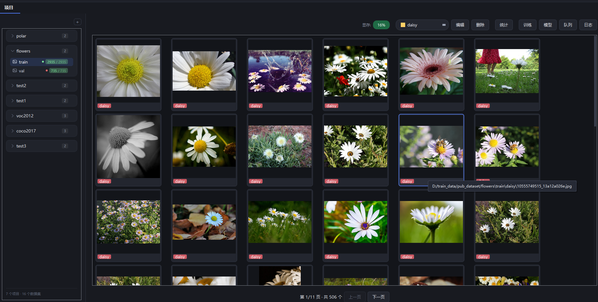
EasyTrainer 主介面
1.2 專案與資料集
新增專案：點左側「+ 新增專案」，輸入名稱，確定。專案是資料集的容器，每個資料集都必須屬於某個專案。
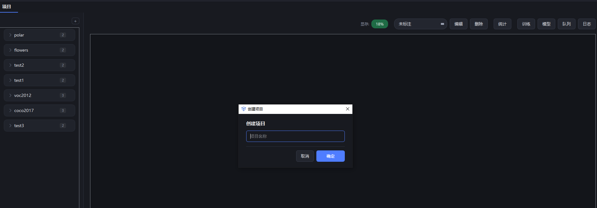
輸入專案名稱
在專案節點上按右鍵：
- 新增資料集 ── 在專案下新建一個資料集
- 匯出專案 ── 把整個專案的資料集與標註匯出成指定格式
- 修改名稱 ── 重新命名專案
- 刪除專案 ── 連同下面的資料集、標註、訓練紀錄一起清除
在資料集節點上按右鍵，則是對單一資料集的操作：匯入 / 匯出 / 移動 / 修改 / 刪除。
雙擊資料集才會載入：重新掃描影像和標註、重建快取，之後右側就能瀏覽。已經載入過的（列內有狀態圓點）再雙擊不會重複掃描。
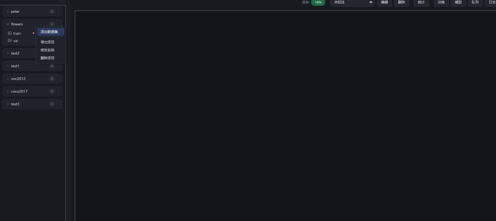
專案右鍵選單
1.3 匯入資料
選取資料集，點頂部「匯入」，會彈出匯入對話框：
- 影像路徑 ── 圖片所在的資料夾
- 標籤路徑 ── 標註檔案所在的資料夾
- 標籤格式 ── Yolo txt / Labelme json / 依子資料夾分類匯入
分類資料集選「依子資料夾分類匯入」：每個子資料夾名稱就是一個類別，不需要標註檔案。
OCR 用 Labelme json，文字框的標籤固定為「文本」，匯入後會自動標成文字偵測資料集。
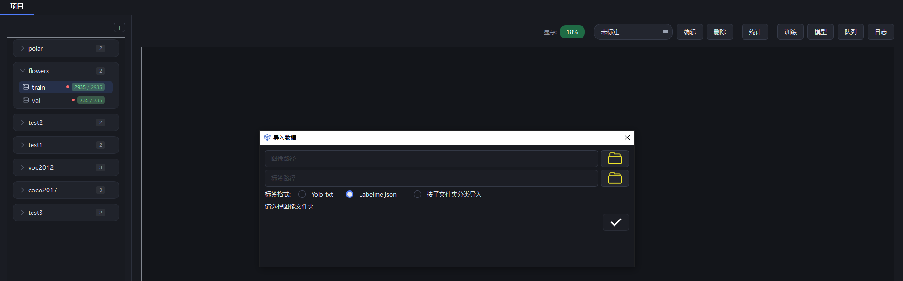
匯入資料對話框
1.4 資料集屬性
選取資料集，點頂部「屬性」，能看到影像路徑、標籤路徑，以及標籤分佈柱狀圖 ── 每個類別有多少個標註框。哪一類樣本偏少，一眼就能看出來。
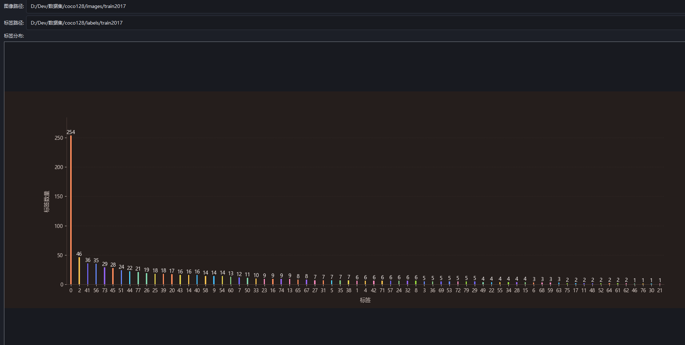
資料集屬性與標籤分佈
1.5 介面語言
工具列最右側是介面語言下拉式選單，九種語言任選：中文、English、繁體中文、日本語、한국어、Deutsch、Español、Français、Tiếng Việt。
選取後主介面立刻切換，已經開啟的紀錄、訓練佇列視窗一起重新整理；還沒開啟的對話框下次開啟就是新語言。選擇會被記住，下次啟動仍是這個語言。下拉式選單裡每一項都用該語言自己的寫法列出，所以無論目前介面是什麼語言，都能認出該選哪一項。
2. 標註
2.1 進入標註介面
選取資料集後，在縮圖上按右鍵選「標註」，或者直接雙擊縮圖。
2.2 畫框
標註介面頂部工具列有三種畫法：
- 矩形 ── 拖曳滑鼠畫框
- 多邊形 ── 依序點頂點，雙擊或按 Enter 結束（分割任務用）
- 文字 ── 先開啟頂部的「文字標註」開關，再拖框，放開就彈出輸入框輸入文字，雙擊可改（OCR 任務用）
畫文字框一律用矩形。傾斜的文字也用水平框蓋住就好 ── 訓練時多邊形會被當作水平外接框處理，沿著輪廓描沒有額外好處。
工具列上還有「刪除影像」，刪掉目前這張。
類別在右側標籤清單裡選。
「顯示標註」開關隨時能隱藏所有輪廓（框線、標籤、頂點控點），方便看原圖。已經貼上去、還沒落定的內容只會隱藏輪廓，圖案照常顯示，所以關掉它正好能預覽「貼完是什麼效果」。
右下角「標註資訊」列出本圖每個標註物件的形狀（矩形 / 多邊形）、頂點數和面積；下面緊接著的影像資訊顯示目前圖的寬 × 高 × 通道數（如 505×505×3）和序號。
再往下是剪貼簿：在右鍵選單複製多邊形後，複製區域的縮圖（120 × 90）會加進來，最多存 9 張，縱向排列、可捲動。最新一張預設選取、帶藍色邊框；在縮圖上按右鍵可以刪掉這一張，或者清空全部。
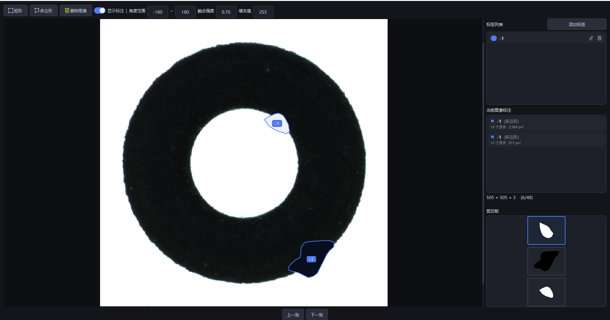
矩形 / 多邊形標註、標籤清單與右下角剪貼簿
2.3 標籤管理
標註介面右側是標籤清單，上方有「新增標籤」：
- 標籤名稱 ── 多個標籤用逗號分隔，一次可以加好幾個
- 匯入 ── 從別的資料集把標籤批次複製過來
- 顏色 ── 從預設色盤裡選，或者點「自訂」自己挑
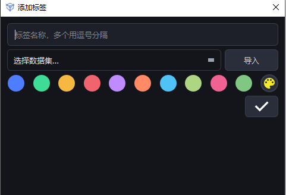
新增或匯入標籤
2.4 修改類別
改一個：點一下標註框，會彈出類別下拉式選單，選新類別即可。右側標籤清單裡的標籤也能重新命名、改色、刪除。
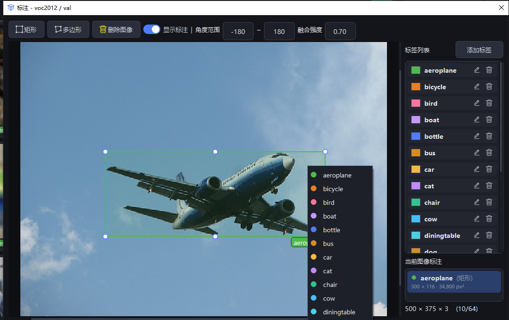
在標註框上直接修改類別
批次改：在縮圖上按右鍵 →「批次修改類別」，填入原類別和新類別，整個資料集裡這一類的標註全部改名。
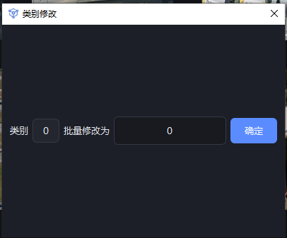
類別批次修改視窗
2.5 複製貼上標註物件
在多邊形標註上按右鍵，有兩個操作：
- 複製 ── 把這塊區域的像素存成範本，同時在右下角剪貼簿產生縮圖
- 填滿 ── 把區域內的像素改成「填滿值」那三個框對應的 RGB 顏色（每通道
0 ~ 255，預設 255）。常用在把瑕疵抹成背景色
左鍵點選剪貼簿裡的一張縮圖，再把滑鼠移到畫布上，會有一條多邊形虛線跟著走 ── 形狀是旋轉後的真實輪廓，已經套用了這次隨機抽出的角度。落點和方向先看清楚，按 Esc 收掉虛線回到普通滑鼠模式，再按右鍵選「貼上」落定。
在影像空白處按右鍵選「貼上」，就把剪貼簿裡目前選取的那張貼到滑鼠位置，同一張圖或換一張圖都行。貼上前先在工具列設好這幾項：
- 角度範圍 ── 貼上時隨機旋轉的角度區間（預設
-180 ~ 180）。虛線預覽用的就是這個區間裡隨機抽出的角度，所見即所得
- 融合強度 ──
0 ~ 1，預設 0.70。貼上時自動做亮度補償和邊緣羽化，讓貼上去的部分和背景自然銜接；設成 0 就是直接貼上
- 填滿值 ── R / G / B 三個輸入框（每通道
0 ~ 255，預設 255），搭配右鍵「填滿」把區域抹成這個顏色
- Ctrl + Z ── 復原最近一次貼上或填滿，像素還原、隨之新增的標註一起移除，可以連續復原
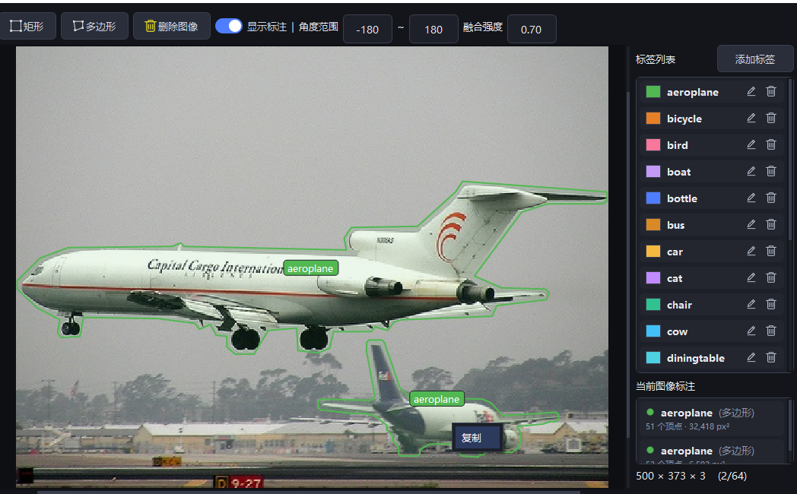
在標註物件上按右鍵複製 → 剪貼簿縮圖，工具列設定角度範圍 / 融合強度 / 填滿值
2.6 多邊形區域亮度調整
點選一個多邊形，在工具列「設定」裡開啟亮度調整，就能改這個多邊形框內像素的明暗。拖滑桿或者直接輸入數值，影像上即時預覽。
- 範圍 ──
0 ~ 1，預設 0.50 表示原樣。往 1 走越亮（1.00 大約兩倍亮度），往 0 走越暗（0 全黑）
- 只對選取的多邊形生效。矩形、或者什麼都沒選取的時候只給提示，不動像素。點另一個多邊形，滑桿會回到它自己的值（沒調過的都是 0.50），不會把上一個的亮度帶過去
- 什麼時候寫入磁碟 ── 拖動過程只改記憶體、即時預覽。按 A / D 切圖或按 Ctrl + S 才寫進影像檔案
- 復原 ── 一次調整只記一步，Ctrl + Z 回到調整前。同一次裡來回拖多少下也只算一步
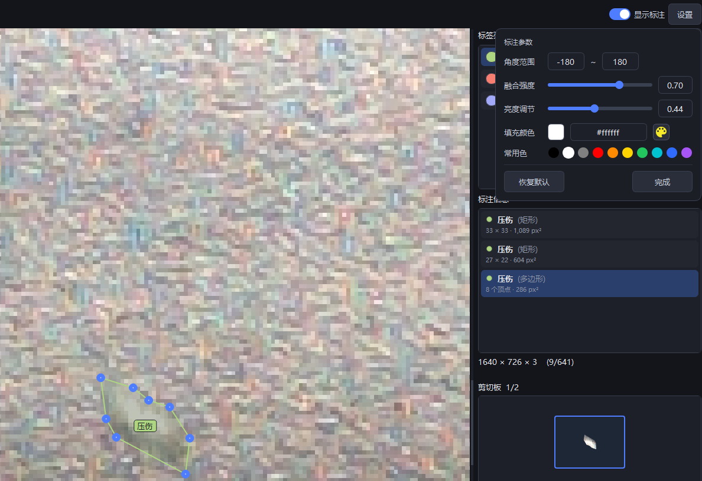
選取多邊形後用「亮度調整」改框內像素明暗，影像上即時預覽
2.7 依類別篩圖
頂部工具列的類別下拉式選單，選取某一類之後，影像區只顯示含這個類別的圖。想集中檢查、補標某一類的時候很方便。
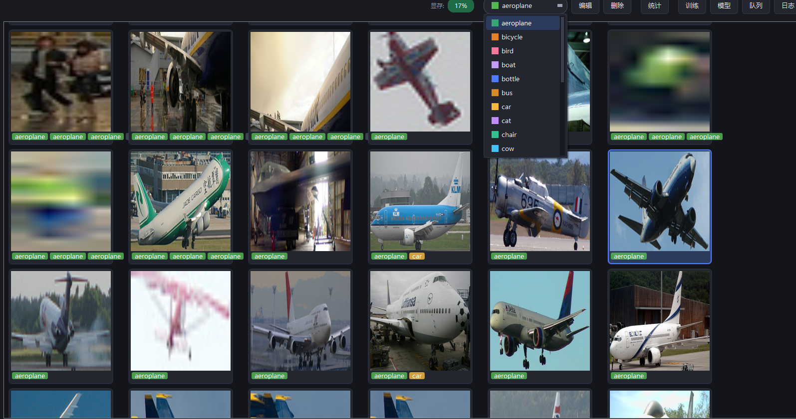
依類別篩選縮圖
3. 訓練
3.1 設定訓練參數
點首頁或模型介面的「訓練」，會彈出參數設定：
- 任務類型 ── 偵測 / 分割 / 分類 / 異常偵測 / OCR，會跟著資料集格式自動切換
- 訓練集 / 驗證集 ── 可以多選，也能跨專案組合
- 裝置 ── 自動列出可用的 GPU
- 週期 / 優化器 / 早停 ── 優化器偵測和分割用
adamw、分類用 sgd；早停是連續 N 週期沒有提升就提前結束，填 0 表示關閉
- 學習率 ── 訓練過程中自動衰減
- 批次 / 影像尺寸 / 梯度累積 / 執行緒數 ── 影像尺寸必須是 32 的倍數；顯示記憶體不夠就調小批次、調大梯度累積，效果等同於放大批次
- 輸出路徑 ── 留空就按時間自動產生目錄，也可以點「選擇路徑」指定
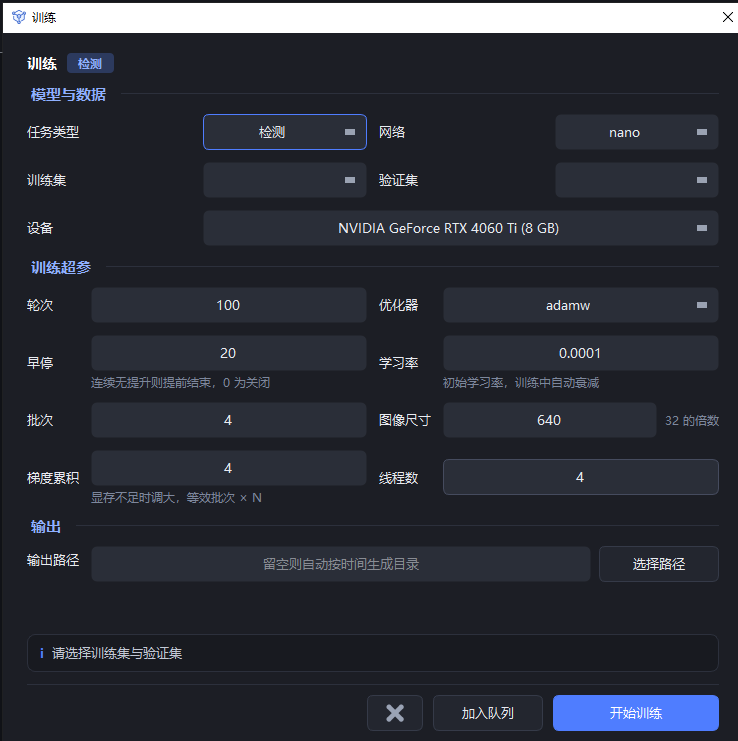
訓練參數設定對話框
3.2 訓練佇列
參數設定好之後，除了「開始訓練」，還能點「加入佇列」把任務先排進去，接著設定下一個。首頁點「訓練佇列」開啟佇列視窗：
- 佇列按順序執行，偵測 / 分割 / 分類 / 異常偵測 / OCR 可以混排，跑完一項自動切下一項
- 上移 / 下移 / 移除 ── 調整執行順序或刪掉任務
- 編輯 ── 修改選取任務的參數
- 清理已完成 ── 把已經跑完的紀錄移出去
- 開始佇列 ── 從頭依序執行佇列裡的任務
佇列適合晚上掛機：把多個資料集的任務一次設定好，軟體會自動全部跑完並分別儲存模型。
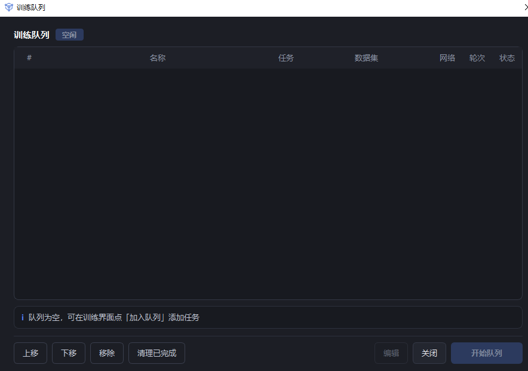
訓練佇列視窗
3.3 訓練進度
點「開始訓練」後回到首頁，頂部出現進度條和控制列：
- 任務名稱 + 進度 ── 形如
coco128 訓練中 5/100，進度條裡顯示目前週期的 loss
- 停止訓練 ── 隨時中止，已經跑完的部分會儲存
- 剩餘時間 ── 按已經用掉的時間外推估算
- 顯示記憶體 ── GPU 顯示記憶體使用率，即時更新
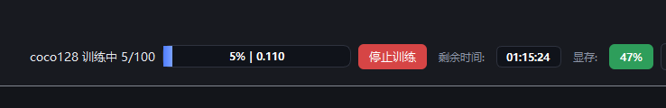
訓練進度條與狀態列
3.4 訓練曲線
在模型管理裡選取一筆訓練紀錄，點右側詳情面板的「查看完整指標」，會彈出訓練曲線視窗：
- 上半部分是 val loss 曲線
- 下半部分是 mAP@50-95 / mAP@50 / AR / F1 / precision / recall 等多條曲線，分割任務還會多一條 mask mAP
- 右上角「標籤篩選」下拉式選單，可以切換看全部指標或某個類別的曲線
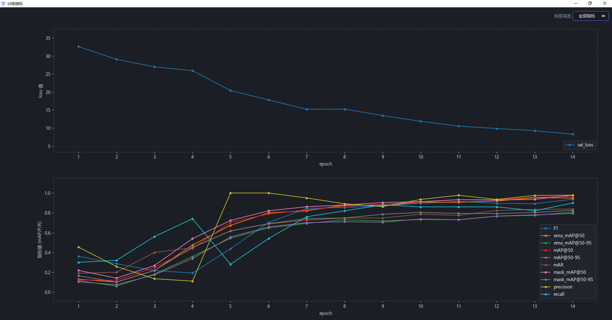
訓練指標曲線（val loss + 各項精度）
4. 模型管理
點首頁「模型」開啟模型管理：左邊是訓練紀錄清單，右邊是詳情面板。
4.1 清單與篩選
- 搜尋框 ── 按專案 / 資料集 / 標籤的關鍵字過濾
- 任務 / 狀態下拉式選單 ── 任務可選偵測 / 分割 / 分類 / 異常偵測 / 文字偵測 / 文字辨識；狀態可選訓練中 / 已完成 / 失敗 / 已停止
- 僅顯示每個資料集最佳 ── 同一個資料集只留精度最高的那筆
- 清單欄位：任務、資料集 / 標籤、精度、訓練時間、耗時、影像尺寸、操作
- 精度欄帶色條 ── 綠 ≥ 0.8、黃 0.5 ~ 0.8、紅 < 0.5。失敗或已停止的紀錄在這一欄顯示狀態文字，滑鼠移上去能看到失敗原因
- 列內三個按鈕：測試（開啟模型測試）、匯出、刪除（連帶清除對應的訓練紀錄）
4.2 詳情面板
點任意一列，右側顯示這筆紀錄的完整參數：任務 · 規模、狀態、精度、訓練 / 驗證集、影像尺寸、週期數 / 早停、批次大小、學習率、優化器、裝置、標籤、訓練時間、耗時、模型路徑。上方還有精度曲線的縮圖。
面板底部四個按鈕：
- 查看完整指標 ── 開啟訓練曲線視窗（見「訓練曲線」一節）
- 測試此模型 ── 用這個模型開啟測試對話框（見「測試參數」一節）
- 依此設定重新訓練 ── 把這筆紀錄的全部訓練參數帶出來，重新開一次訓練
- 開啟模型目錄 ── 在檔案總管裡定位權重檔案
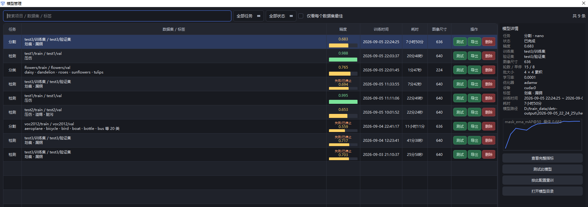
模型管理：篩選列 + 訓練紀錄清單 + 右側詳情面板
4.3 匯出 ONNX
點「匯出」選個目錄，會產生一個「项目_时间戳」資料夾：
- 模型
.onnx ── 偵測和分割由 RF-DETR 匯出，分類與 OCR 由 torch 匯出。命名是「项目_任务_图像尺寸_模型规模.onnx」
classes.txt ── 類別 id 和名稱的對照。OCR 的辨識段是 vocab.txt，一行一個字元就是詞彙表- 評估報告 PDF ── 自動在驗證集上跑一遍評估，沿用測試報告的範本，命名「…_评估报告.pdf」
examples/ ── C++ / C# / Python 呼叫 ONNX 做偵測、分割、分類的範例程式碼。OCR 目前只有 Python 版
匯出過程有進度提示。ONNX 轉換需要安裝 onnx 和 onnxsim，沒裝會在彈出視窗裡提示。
分類任務不產生評估報告 ── 漏檢誤檢那套報告對分類不適用。OCR 的文字辨識也一樣，它的結論只有 CER。
5. 測試與評估報告
5.1 測試參數
在模型管理裡點列內的「測試」（或詳情面板的「測試此模型」），會彈出測試對話框。頂部顯示模型資訊：任務類型、權重檔案、訓練精度、輸入尺寸、規模。下面是參數：
- 資料 ── 跨專案的所有資料集都能選
- 裝置 ── 預設第一個可用的 GPU
- 信賴度 ── 低於這個分數的預測直接丟掉
- IoU 閾值 ── 預測框和標註框的重合度達標才算正確檢出
- 輸出標籤檔案 ── 勾選就把預測框寫成 labelme json，方便人工複核
- OCR ── 文字偵測分推論和評估兩條路：推論把結果寫成標註 json，評估統計 P/R。文字辨識不輸出標註檔案，只回報文字條的辨識率
資料集有標註時會自動進入評估模式，統計檢出率 / 漏檢 / 誤檢。文字偵測如果選了推論模式，就無視標註，直接把預測框寫成 json。
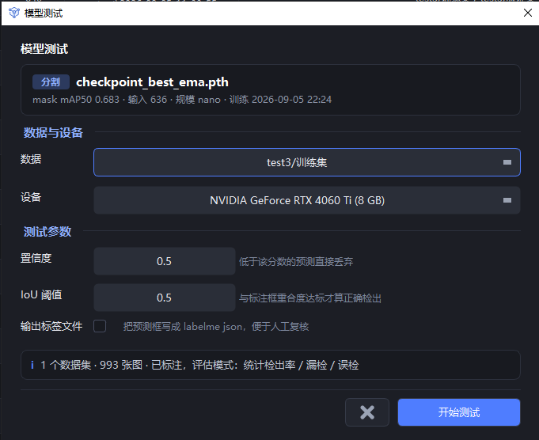
模型測試參數設定
5.2 結果分析
測試跑完會彈出結果分析視窗，分兩個維度統計，用詞一律是直白的「正確檢出 / 漏檢 / 誤檢」：
- 影像維度（依「張」統計，檢出 1 個就算檢出）── 測試張數、檢出影像及檢出率、未檢出影像、有誤檢的影像
- 標籤維度（依「標註框」統計）── 正確檢出、漏檢、誤檢、準確率
- 依類別表格 ── 每一類的標註數、正確檢出、漏檢、誤檢、檢出率、準確率
- 文字辨識 ── 不按框統計，報文字條總數、CER（文字錯誤率）和全對條數
- 底部結論 ── 一句話點出整體是偏漏檢還是偏誤檢，以及拖累最大的類別
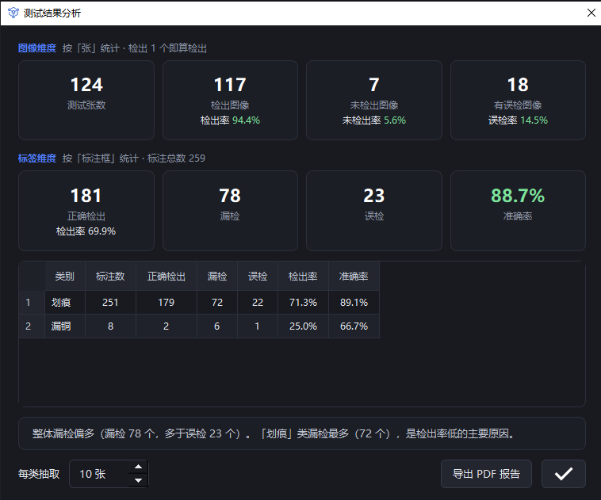
測試結果分析視窗（影像維度 + 標籤維度 + 依類別明細）
5.3 匯出 PDF 報告
點右下角「匯出 PDF 報告」，由背景執行緒產生，內容包括：
- 總覽頁 ── 指標彙總表 + 標註分佈圖
- 漏檢樣本頁 / 誤檢樣本頁 ── 按「每類抽取 N 張」展示縮圖（數量在左下角調整），圖上用紅框標出漏檢和誤檢的位置，並註明抽取比例
- 建議頁 ── 針對各類錯誤給出改進方向
抽樣只發生在出報告這一步，明細資料仍是全量，後面做難例挖掘不會丟資料。
6. OCR
OCR 和其它任務不一樣：它由兩個模型串起來完成 ── 文字偵測找出文字框，文字辨識讀出框裡的字。訓練、測試、匯出都是兩段分開做的，模型管理裡會留下兩筆紀錄。
6.1 標註文字
在標註介面開啟頂部的「文字標註」開關，類別會自動固定成保留標籤「文本」（不用先建標籤）。像畫矩形一樣框住文字，放開滑鼠就彈出輸入框輸入內容；雙擊已有的文字框隨時能改。
文字框一律用矩形畫：傾斜的文字也用水平框蓋住就好，訓練時多邊形會被當成水平外接框，描著輪廓畫沒有額外好處。
帶文字框的 labelme json 匯入時會自動把資料集標成文字偵測資料集。之後只有這類資料集會出現在 OCR 的訓練集下拉式選單裡。
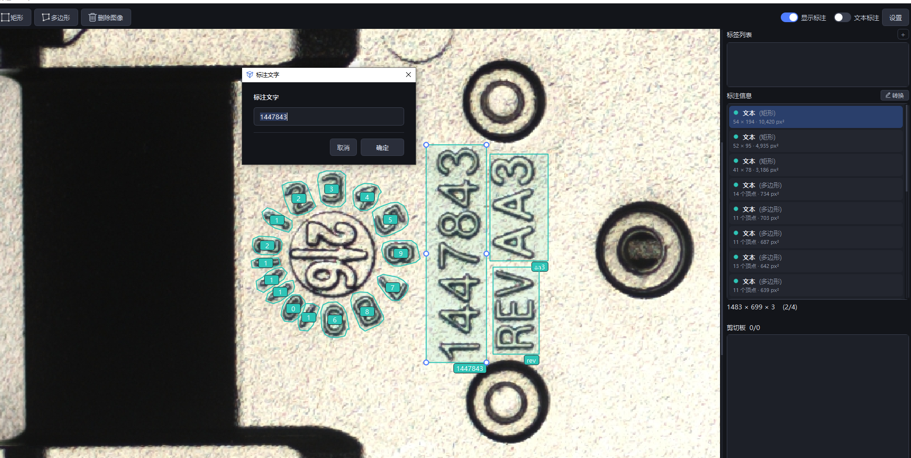
開啟「文字標註」開關後拖框，放開即彈出文字輸入框；右側「標註資訊」列出每個文字框的形狀、頂點數與面積
標完回到資料集檢視，OCR 資料集裡每個文字框會單獨裁成一張縮圖，標籤條上顯示的是框裡輸入的文字內容（超過 3 條摺疊成 +N），不是類別名 ── 逐張翻過去就能核對內容輸入得對不對。上方類別篩選裡只有「文本」這一項。
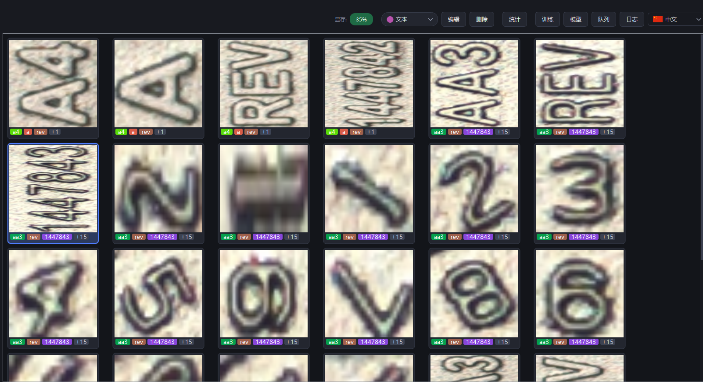
OCR 資料集：每個文字框單獨成圖，標籤條顯示所輸入的文字內容（超出摺疊成 +N）
6.2 訓練
任務類型選 OCR。
影像尺寸是偵測段的輸入（預設 1024，必須是 32 的倍數）；辨識段固定 32×128，不受這一項影響。
點「開始訓練」後會自動拆成兩項排隊：先文字偵測，再文字辨識。前一項跑完，要等顯示記憶體回落到開訓前的水平才起下一項，這期間進度區顯示「等待顯示記憶體釋放 · 下一項:文字辨識」，中間不會空著。
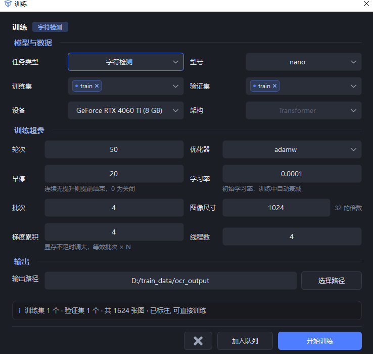
OCR 的訓練參數（圖中標示為「文字偵測」段）；型號即檔位 nano ~ large，架構一欄由演算法自動決定、置灰不可改
辨識段的詞彙表直接取標註裡出現過的字元。所以標註文字要涵蓋現場實際會遇到的字元集 ── 現場有、標註裡沒出現過的字元，模型認不出來。
6.3 測試：偵測兩條路，辨識一條路
- 文字偵測 · 推論 ── 不比對標註，直接把預測框（連同辨識出的文字）寫成 labelme json。寫出的 json 帶 OCR 標誌位，拖回軟體會被認成文字偵測資料集，可以用來核對結果或補標
- 文字偵測 · 評估 ── 資料集有標註時自動進入，統計正確檢出 / 漏檢 / 誤檢和依類 P/R，跟偵測任務一致
- 文字辨識 ── 拿標註框裁出的文字條來測，回報文字條總數、CER（文字錯誤率）和全對條數，不輸出標註檔案
6.4 匯出
兩段各匯出一份 ONNX：项目_字符检测_尺寸_规模.onnx 和 项目_字符识别_尺寸_规模.onnx，辨識段額外帶一個 vocab.txt 詞彙表。
文字偵測照常產生評估報告；文字辨識只有 CER 一個結論，不產生報告。
呼叫範例在匯出目錄的 examples/python/ocr.py。注意偵測段輸出的 logits 沒過 sigmoid，後處理要自己寫，範例裡都寫好了。
7. 紀錄
點首頁頂部的「紀錄」，開啟紀錄視窗，即時捲動顯示：
- 軟體啟動 / 退出
- 專案和資料集的建立、重新命名、刪除、匯入 / 匯出
- 標籤的建立、重新命名、刪除
- 訓練的開始、進行中（
[train] 前綴轉發子程序輸出）、指標更新、模型儲存、手動停止
- 測試的啟動、進行中（
[test] 前綴）、完成、失敗
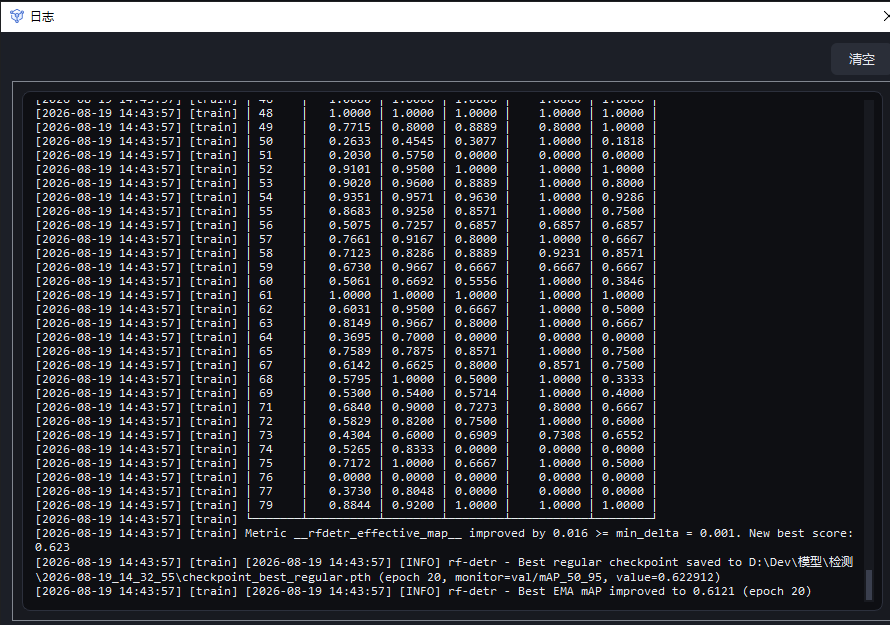
紀錄視窗